Software Engineering
Class overview, Class Goals, Prerequisites, Mechanics
"How not to get lost in complexities of our own making is still computing's core challenge."
Edsger Dijsktra
"Science is about understanding nature, understanding what is.
By contrast, engineering is synthetic; it is about creating what has never been."
Theodore von Karman
What Is Computing (informatyka)?
In a general way, we can define computing to mean any goal-oriented activity requiring, benefiting from, or creating computers. Thus, computing includes designing and building hardware and software systems for a wide range of purposes; processing, structuring, and managing various kinds of information; doing scientific studies using computers; making computer systems behave intelligently; creating and using communications and entertainment media; finding and gathering information relevant to any particular purpose, and so on.
Knowledge areas
- Discrete Structures (DS)
- Human-Computer Interaction (HC)
- Programming Fundamentals (PF)
- Graphics and Visual Computing (GV)
- Algorithms and Complexity (AL)
- Intelligent Systems (IS)
- Architecture and Organization (AR)
- Information Management (IM)
- Operating Systems (OS)
- Social and Professional Issues (SP)
- Net-Centric Computing (NC)
- Software Engineering (SE)
- Programming Languages (PL)
- Computational Science (CN)
- Software engineering is the discipline of
- developing and maintaining software systems that behave reliably and efficiently,
- are affordable to develop and maintain,
- and satisfy all the requirements that customers have defined for them.
- More recently, it has evolved in response to factors such as the growing impact of
- large and expensive software systems in a wide range of situations
- and the increased importance of software in safety-critical applications.
- Software engineering is different in character from other engineering disciplines due to
- both the intangible nature of software and
- the discontinuous nature of software operation.
- It seeks to integrate the principles of
- mathematics and computer science,
- the engineering practices developed for tangible, physical artifacts
- with project management.
Agenda
- My Experience with Computing
- Course Website
- Syllabus
- Course Goals
- Live Integrity and Synergy
- Q&A
- Introductions
- interests
- topic priorities
My Experience with Computing
(http://sobol.cs.ttu.edu, http://sorcer.cs.ttu.edu now better at http://sobolki.com, http://sorcersoft.org)
- M.S. – intelligent embedded systems (automata theory, pattern recognition, AI)
- PAS – pattern recognition, AI, neural networks
- Ph.D/PAS – image processing/pattern recognition systems (symbolic logic, fuzzy logic, AI)
- PAS – virtual machines (OO methodology)
- PAS/WVU – knowledge-based systems (percept calculus, AI)
- WVU – info sharing systems (multimedia/GUIs/CE)
- GE GRC – networking, web-based computing, P2P computing (distributed systems, security)
- CS TTU – service-oriented computing (SORCER, EO-programming, metacomputing)
- AFRL/WPAFB - metacomputing (SORCER)
- Intl. collaboration: China, Russia, etc.
Course Website
http://sobolki.aster.net.pl/io (Poland)
login/password = io/pjwstk-io-ms.10
http://sorcersoft.org/io (USA)
login/password = ss-io/pjwstk-io-ms.10
Syllabus
Course Goals: Software Engineering
- SE principles
- computer science - effective programming (efektywne programowanie)
- engineering - robust design (solidne projektowanie)
- project management (zarz±dzanie projektem)
- foundations – UML modeling and unified process
- mix of theory and practice
Computer Science Curriculum 2008, ACM & IEEE Computer Society
31 core hours
- SE/SoftwareDesign [core] - 8 hours
- SE/UsingAPIs [core] - 5 hours
- SE/ToolsAndEnvironments [core] - 3 hours
- SE/SoftwareProcesses [core] - 2 hours
- SE/RequirementsSpecifications [core] - 4 hours
- SE/SoftwareVerificationValidation [core] - 3 hours
- SE/SoftwareEvolution [core] - 3 hours
- SE/SoftwareProjectManagement [core] - 3 hours
- SE/ComponentBasedComputing [elective]
- SE/FormalMethods [elective]
- SE/SoftwareReliability [elective]
- SE/SpecializedSystems [elective]
- SE/RiskAssessment [elective]
- SE/RobustAndSecurity-EnhancedProgramming [elective]
Quantum Jumps in Programming Complexity
SP - sequential programming
MTP - multi-threaded programming
MPP - multi-process programming
MMPP - multiple-machine-process programming
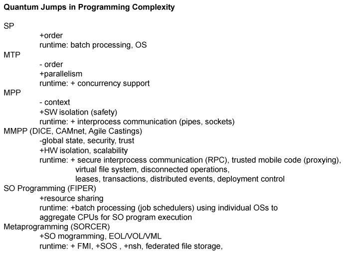
Harder Choices: How the Disciplines Might Appear to Prospective Students
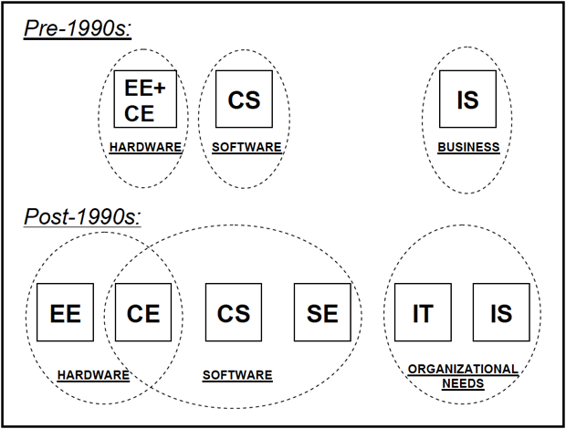
Computing Domains
Computer Science (Podstawy informatyki)
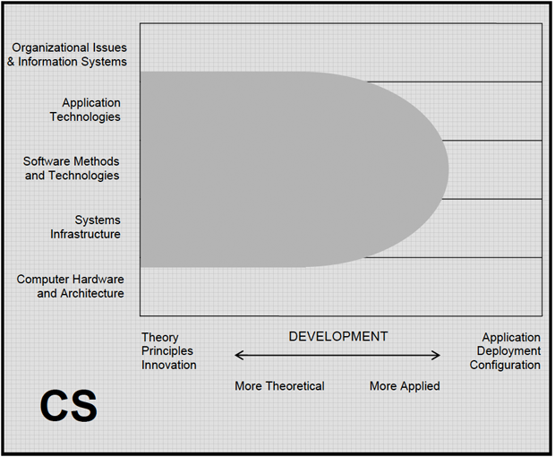
Information Systems (Systemy informacyjne)
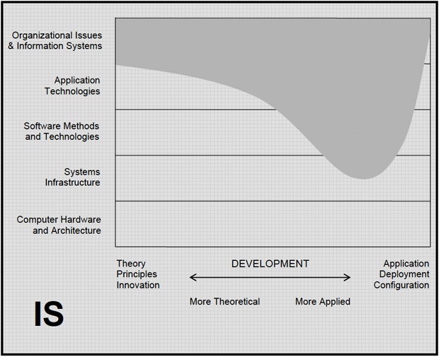
Information Technology (Technologia informacyjna)
Ca³okszta³t wiedzy dotycz±cej tworzenia, przesy³ania, prezentowania i zabezpieczania informacji.
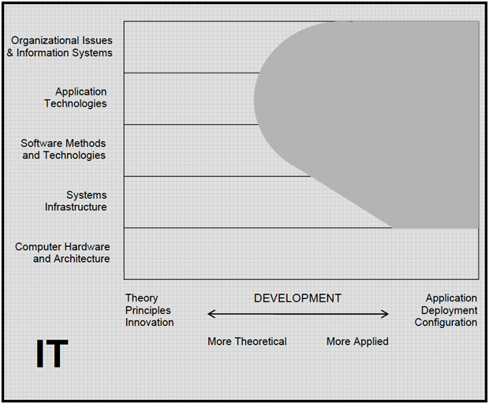
Software Engineering (In¿ynieria oprogramowania)
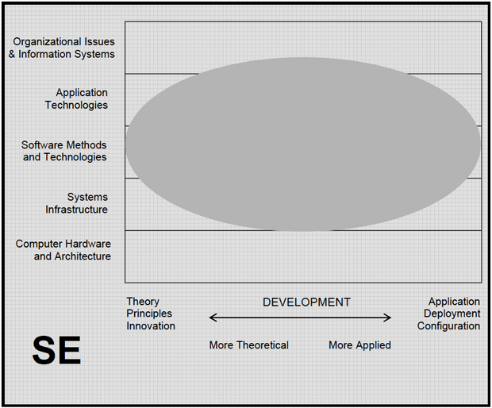
- Software engineering covers a wide range with respect to the systematic development of software.
- This is because SE people fill a wide range of needs in large-project software expertise.
- SE’s main goal is to develop systematic models and reliable techniques for producing high-quality software on time and within budget, and these concerns extend all the way from theory and principles to daily practice.
- The domain of SE also extends downward through systems infrastructure since SE people develop software infrastructure that is robust in operation.
- Its domain also extends upward into organizational issues because SE people are interested in designing and developing information systems that are appropriate to the client organization.
Motivations for component computing
- Why do we want software components?
- Software is expensive and complex
- We should reuse it as much as possible
- The idea almost as old as computing
- Douglas McIlroy, Mass Produced Software Components, NATO conference on software engineering, Garmish, Germany 1968
- “Software production (…) would be enormously helped by the availability of spectra of high quantity routines, quite as mechanical design is abetted by the existence of families of structural shapes, screws or resistors”
- Apply traditional engineering practices
- Build software just like bridges or railroads –�by assembling pre-fabricated pieces
- Grouping and gradual composition is how humans have always been tackling complexity
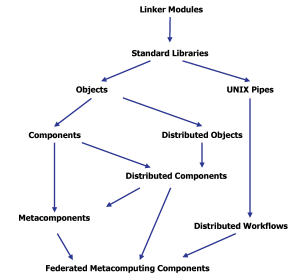
RPC Generations
- First generation RPCs: Sun RPC (ONC RPC) , DCE RPC
- language, architecture, OS independent
- IDL
- Second generation RPCs: CORBA, Microsoft DCOM-ORPC
- Third generation: Java RMI
- it is conceptually similar to the second generation but supports the
semantics of object invocation in different address space
- is built for Java only
- fits cleanly into the language (interfaces, serialization)
- no need for standardized data representation
- with behavioral transfer
- Fourth generation RPCs: Jini Extensible Remote Invocation (Jini ERI)
- dynamic proxies
- dynamic configurations (dependency injection)
- security
- Fifth generation RPCs: Web Services RPC and the XML bandwagon
- Sixth generation RPCs: SORCER Federated Method Invocation
(FMI)
Transdisciplinary Approach to R&D
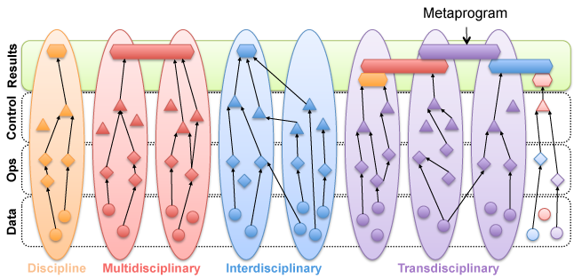
Synergy Helps
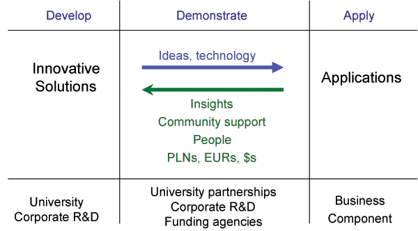
Rate of Change
The pace of technology is increasing => team research
More practitioners
More departments
More startups
More application pull
Your competitors are teams, not individuals
Innovate or Die
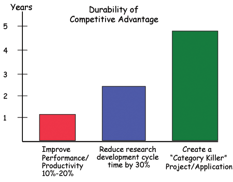
Being Focused and Synergistic
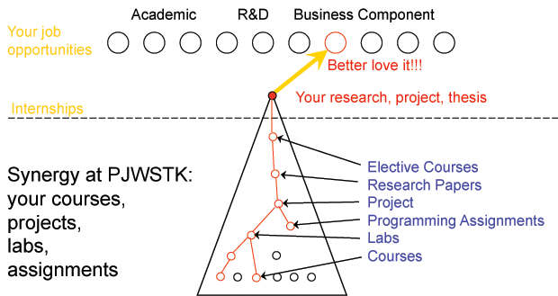
Remember: Talent = Hard Work
Dealing with Complexity at the System Level (Systems Engineering)
Does Not Compute
Constructive triplet (domain, management, carrier - dziedzina, zarzadzanie, no¶nik)
- 1,2,3, ... many (caveman)
- human being (mind, spirit, body)
- deity (god, prophet, spirit)
- computer (programming env, OS, processor)
- information system (data store, DBMS, computer)
- software eng (SW, SW process, project management)
- IT (data storage, resource management, computer infrastructure)
- program (data, cs, ops)
- OO program (object, messages, VM)
- Hierarchical Design Conceptualization
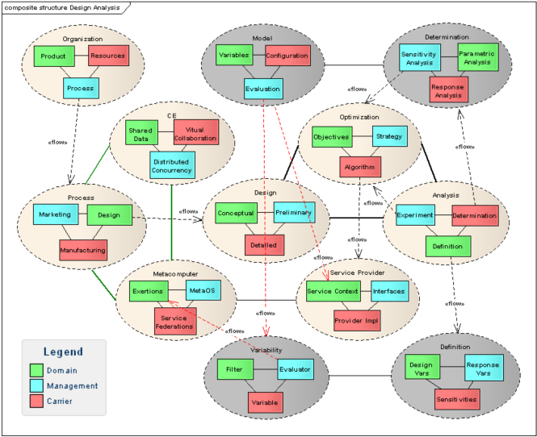
Language – Mankind (Cz³owieczeñstwo)
Writing – Civilization (Cywilizaja)
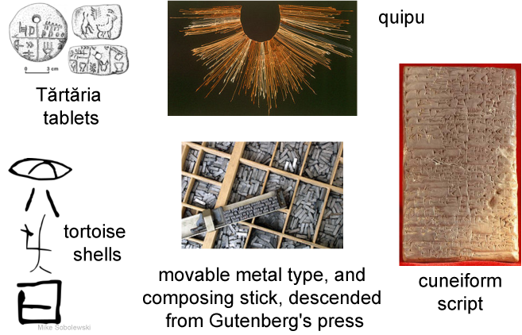
Language Engineering
- Applying scientific principles to
- the linguistic design,
- construction and
- maintenance of tools to help deal with information that has been expressed in natural languages meeting contemporary needs.
- The underlying science is linguistics - the study of how languages work.
Programming Languages vs. �SW Languages
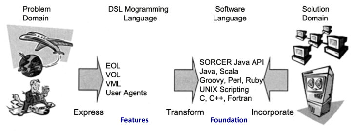
The interpreter for a programming language is just another program.
VEFEx (Variable, Evaluator, Filter with Exertions) Abstractions
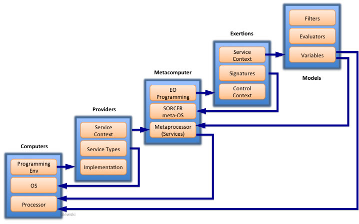
Introductions
- zainteresowanie
(3 dyscypliny z listy poni¿ej)
- szczegó³owe tematy w dyscyplinach poni¿ej
- sk³ad zespólu prac domowych (max 3 osoby) - lider zespo³u
- proponowane propozycje referatu badawczego zgodne z w³asnymi zainteresowaniami (modele UML, diagramy UML, opracowanie nt. weryfikacji, walidacji, testowania oprogramowania, bezpieczeñstwo, artyku³ nt. IO, itd.) wraz z krótkim streszczeniem - aby uzyskaæ dodatkowe punkty
- prze¶lij powy¿sze dane do [email protected], do koñca dnia 12.01.2010
- w miarê mo¿liwo¶ci wyk³ad bêdzie dopasowany do aktualnych zainteresowañ studentów
- SE/SoftwareDesign [core] - 8 hours
- SE/UsingAPIs [core] - 5 hours
- SE/ToolsAndEnvironments [core] - 3 hours
- SE/SoftwareProcesses [core] - 2 hours
- SE/RequirementsSpecifications [core] - 4 hours
- SE/SoftwareVerificationValidation [core] - 3 hours
- SE/SoftwareEvolution [core] - 3 hours
- SE/SoftwareProjectManagement [core] - 3 hours
- SE/ComponentBasedComputing [elective]
- SE/FormalMethods [elective]
- SE/SoftwareReliability [elective]
- SE/SpecializedSystems [elective]
- SE/RiskAssessment [elective]
- SE/RobustAndSecurity-EnhancedProgramming [elective]